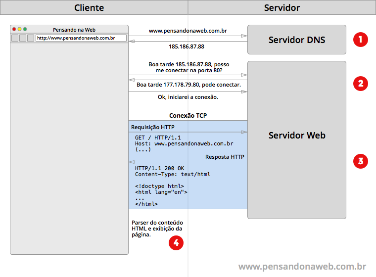

1. Os termos Web e Internet frequentemente são usados como sinônimos. Explique com suas palavras qual é a diferença entre Internet e Web?
Internet é a rede de computadores pelo mundo e web é umas das ferramentas que da acesso a rede.
2. O que acontece quando digitamos um endereço web na barra de navegação? Explique de maneira sucinta o funcionamento do modelo cliente/servidor da web. Para enriquecer sua resposta, adicione em sua explicação imagens estáticas ou gifs animados, caso encontre.
Este processo de requisição e resposta por meio do protocolo HTTP acontece através da conexão estabelecida entre o cliente e o servidor por meio do protocolo TCP. Assim o a mensagem de resposta do navegador são quebradas em pacotes e enviadas para o servidor TCP.
3.Uma aplicação web é um "Software baseado nas tecnologias e nos padrões do World Wide Web Consortium (W3C) que fornece recursos específicos através da Web, como conteúdos e serviços, através de uma interface de usuário, o navegador Web". De acordo com essa definição, responda: Web sites, sem componentes de software, como páginas HTML estáticas, são consideradas aplicações Web? Justifique.
4. O HTML (hypertext markup language) é uma linguagem de programação, atualmente na versão 5, muito utilizada para ambientes desktop? Justifique.
Não. Ela na verdade é uma linguagem de marcação e precisa de um software para visualizada enquando uma linguagem de programação desenvolveria um software proprio.
5. São tecnologias e padrões associados ao funcionamento da world wide web (WWW), EXCETO:
a. HTTP
b. HTML
c. SQL
d. URL
6. Um programa elaborado na linguagem HTML apresenta a seguinte linha: <!DOCTYPE> HTML Sobre essa linha, é correto afirmar que ela:
a. Indica que o arquivo com o programa-fonte possui a extensão doc.
b. Deve vir sempre após a tag .
c. É uma tag que define o nome do arquivo que possui o programa.
d. Especifica ao navegador o tipo de documento HTML que ele vai renderizar.
e. Não atende corretamente a linguagem HTML, que não aceita o símbolo ! em seus comandos.
7. No HTML Tags são:
a. Comandos de linguagem de programação orientada a objetos.
b. Variáveis de tamanho fixo definidas internamente em um programa de computador.
c. Códigos de formatação usados em documentos HTML para instruir o browser sobre a forma de apresentação de textos e gráficos numa home-page.
d. Comandos usados em um programa na linguagem Java para delimitar e formatar seções internas.
e. Definem constantes de formatação que são usadas em linguagens tais como PHP e JSP para que o browser entenda o significado de uma expressão ou gráfico.
8. O elemento CANVAS do HTML 5 é:
a. um sistema que define um mapa de imagem.
b. um sistema que permite ao autor especificar recursos de vídeo e áudio.
c. um sistema que se vale de um conjunto de navegações aninhadas em um documento html incorporado.
d. um sistema que faz transições de animação.
e. um sistema de elaboração de objetos gráficos geralmente em javascript que se utiliza de métodos para desenhar formas personalizadas.
9. Um desenvolvedor web deseja fazer um glossário de termos em um site utilizando listas de definições do HTML5. Nestas listas, o termo a ser descrito e a descrição propriamente dita são criados, respectivamente, por quais tags? Escreva a definição das TAGs escolhidas e justifique seu uso neste cenário.
a. <dt> e <dd>
b. <dd> e <tt>
c. <ul> e <li>
d. <tt> e <dd>
e. <dd> e <dt>
Justificativa: o termo foi usado para criar uma lista por isso nos utilisamos o <dt> para definir o termo a ser ultilizado e <dd> para definir a descrição do termo.
10. As tabelas são elementos muito utilizados na elaboração de páginas HTML. Listas de produtos e respectivos preços são exemplos de informações formatadas e apresentadas através de tabelas na Internet. As tags HTML utilizadas para criar, respectivamente, linhas e colunas em uma tabela são:
a. <br> e </p>
b. <br> e <em></em>
c. <em></em> e <tr></tr>
d. <tr></tr> e <td></td>
e. <td></td> e <tr></tr>
| Questão 5 | Questão 6 | Questão 7 | Questão 8 | Questão 9 | Questão 10 | |
| a | ||||||
| b | ||||||
| c | X | |||||
| d | X | X | ||||
| e | X | X | X |